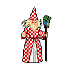

Home > Characters
The Pasta Sorcerer

About
Driven mad by the power of the Turning Staff, The Pasta Sorcerer kidnaps children and takes them to his lair in the sewers beneath deep beneath
Rhine City. Using the magical staff, he then transforms the children in minions called
Pasta Lads.
Personality
Madness
Before he was a regular wizard who simply loved pasta, but now driven mad by the power of the Turning Staff, Noodles consume him.